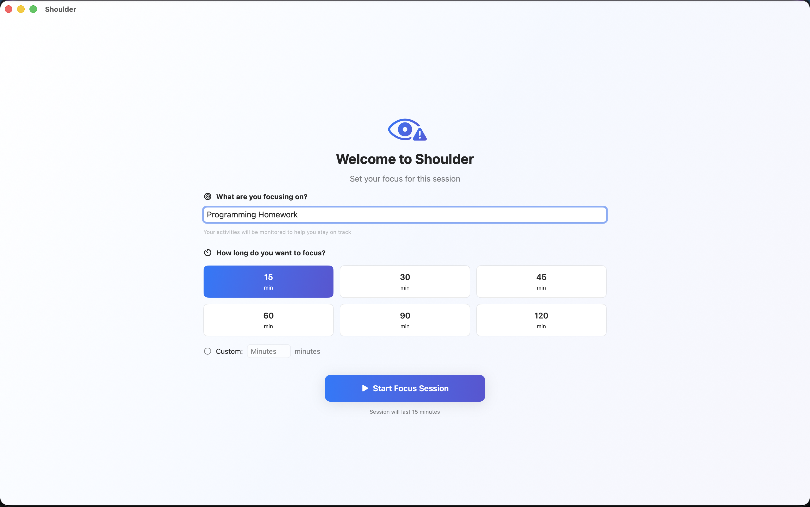

Shoulder
macOS · personal project
Shoulder is a macOS app that periodically looks at your screen and decides whether you're actually being productive. Think of it as a quiet presence watching over your shoulder — hence the name.
Most screentime tools track app usage, which is easy to game. Shoulder goes a level deeper: it captures your screen at intervals and runs it through a model to classify what's actually happening. Reading documentation counts. Doom-scrolling doesn't.
Screenshots
How it works
At a configurable interval, Shoulder captures a screenshot and sends it to a vision model for classification. For privacy-sensitive contexts, it can run a local model entirely on-device. For higher accuracy, it can route to a cloud model instead. You can configure which to use, or let it decide based on context.
Results are logged over time, letting you see patterns in your focus and distraction across the day.